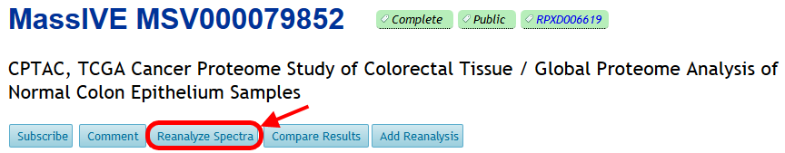
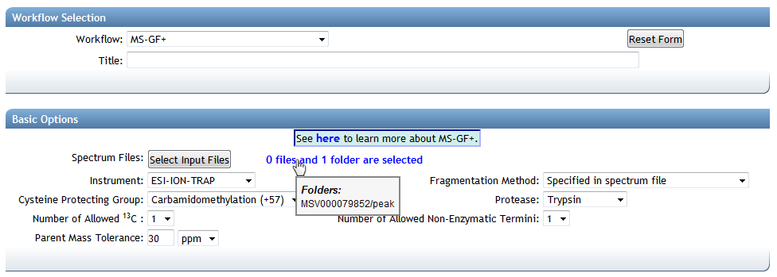

Start reanalyzing MassIVE datasets by clicking the “Reanalyze Spectra” button on the dataset page:

This brings you to the ProteoSAFe data analysis workflow input form, with the dataset’s spectrum files pre-selected. From here you can configure and run your search on these files:

ProteoSAFe offers a variety of analysis tools to derive meaningful knowledge from a dataset’s spectrum files:
| Workflow | Link |
|---|---|
| Database Search | MS-GF+ |
| Spectral Library Search | MSPLIT |
| Multi-Blind Modification Search | MODa |
| De Novo Peptide Sequencing | PepNovo |
| Proteogenomics | Enosi |
| Multi-Pass Search | Maestro |